73 of 197 losses (30.9%) are immediate_loss (MFE never exceeded 10%) — entry direction was wrong from the start more often than it stopped out normally (48.3%) or bled out over time (20.8%).
Closed trades
504
2024-01-03 → 2026-04-24
Win rate
53.17%
95% CI 48.81–57.49%
Profit factor
1.525
Net $6,137.27
Max drawdown
$-494.41
Max 8 consecutive losses
Key findings
216 trades against a bearish 4H RSI state: WR 47.69% vs 57.29% for the 288 aligned trades (9.6pp gap), PF 1.263 vs 1.769.
Only 17/73 (23.3%) immediate_loss trades have overlapping 30m OHLCV+RSI price history; the RSI-at-entry chart is a partial-coverage view, not a full-sample result.
V3.4 is not the active formal S1 version (V3.9 is, confirmed 2026-07-27). This report is historical/comparison context only; see RS-XAUUSD-20260727-004 for the current version and RS-XAUUSD-20260727-005 for the version gap.
Impact on practice
No active policy change. Research/publication only for this study.
Performance
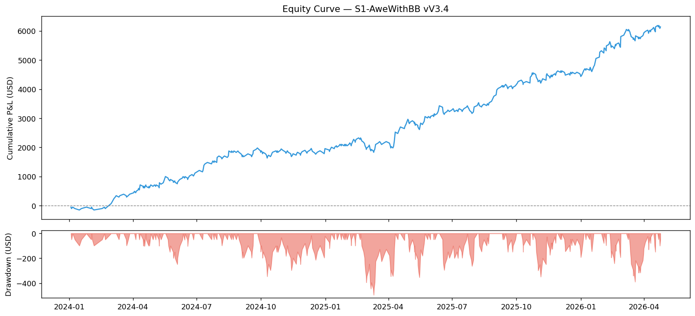
Fail Pattern Breakdown
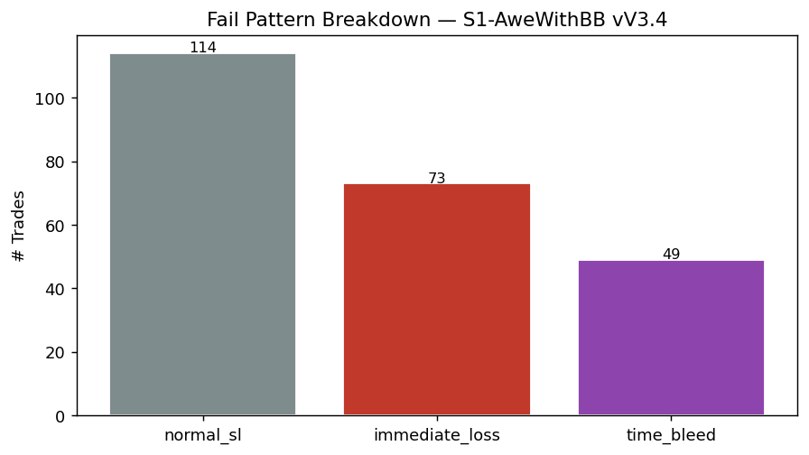
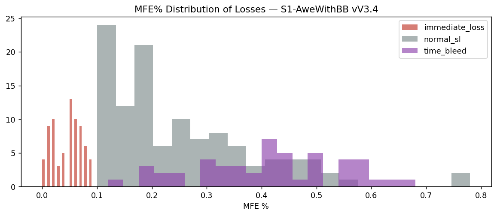
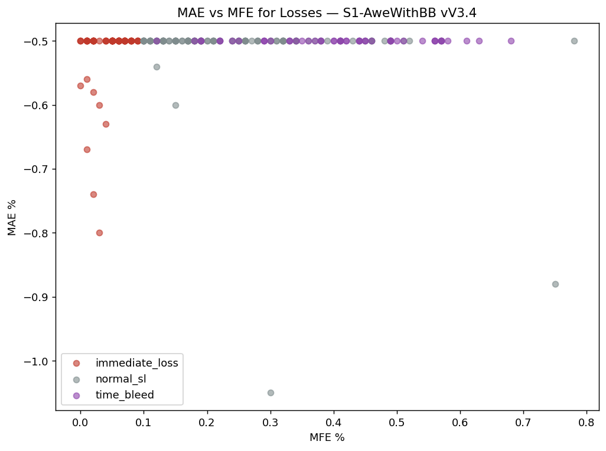
Fail-Type Breakdown
| fail_type | count | % |
|---|---|---|
| normal_sl | 114 | 48.3% |
| immediate_loss | 73 | 30.9% |
| time_bleed | 49 | 20.8% |
30-Minute Entry-Slot Timing
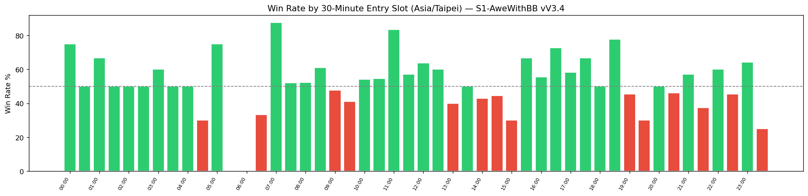
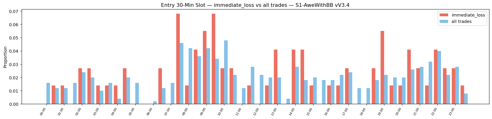
30-minute entry timing
Asia/Taipei bar-start time. All 48 slots are shown; low-n cells (n<5) score 0 and are marked low-n. Rank scores range −2…+2, never as entry gates.
| 30m slot | n | WR | 95% CI | PF | Net USD | Rank score |
|---|---|---|---|---|---|---|
| 00:00 | 8 | 75.0% | 40.93–92.85% | 4.798 | 373.23 | — |
| 00:30 | 6 | 50.0% | 18.76–81.24% | 1.81 | 119.92 | — |
| 01:00 | 6 | 66.67% | 30.0–90.32% | 5.243 | 418.49 | — |
| 01:30 | 8 | 50.0% | 21.52–78.48% | 1.007 | 1.36 | — |
| 02:00 | 12 | 50.0% | 25.38–74.62% | 1.415 | 123.07 | — |
| 02:30 | 10 | 50.0% | 23.66–76.34% | 1.515 | 126.25 | — |
| 03:00 | 5 | 60.0% | 23.07–88.24% | 1.498 | 48.70 | — |
| 03:30 | 8 | 50.0% | 21.52–78.48% | 1.5 | 106.32 | — |
| 04:00 | 2 | 50.0% | 9.45–90.55% | 1.011 | 0.55 | — |
| 04:30 | 10 | 30.0% | 10.78–60.32% | 0.425 | -198.94 | — |
| 05:00 | 8 | 75.0% | 40.93–92.85% | 2.997 | 196.80 | — |
| 05:30 | 0 | — | — | — | 0.00 | — |
| 06:00 | 1 | 0.0% | 0.0–79.35% | 0.0 | -49.05 | — |
| 06:30 | 6 | 33.33% | 9.68–70.0% | 0.501 | -98.21 | — |
| 07:00 | 8 | 87.5% | 52.91–97.76% | 11.748 | 535.24 | — |
| 07:30 | 23 | 52.17% | 32.96–70.76% | 1.996 | 538.38 | — |
| 08:00 | 21 | 52.38% | 32.37–71.66% | 1.344 | 169.18 | — |
| 08:30 | 18 | 61.11% | 38.62–79.7% | 1.937 | 322.90 | — |
| 09:00 | 21 | 47.62% | 28.34–67.63% | 0.893 | -58.91 | — |
| 09:30 | 17 | 41.18% | 21.61–63.99% | 0.735 | -130.50 | — |
| 10:00 | 24 | 54.17% | 35.07–72.11% | 1.674 | 364.14 | — |
| 10:30 | 11 | 54.55% | 28.01–78.73% | 1.854 | 210.84 | — |
| 11:00 | 6 | 83.33% | 43.65–96.99% | 4.992 | 195.41 | — |
| 11:30 | 14 | 57.14% | 32.59–78.62% | 1.742 | 218.90 | — |
| 12:00 | 11 | 63.64% | 35.38–84.83% | 2.035 | 202.96 | — |
| 12:30 | 10 | 60.0% | 31.27–83.18% | 2.14 | 223.62 | — |
| 13:00 | 10 | 40.0% | 16.82–68.73% | 0.644 | -109.40 | — |
| 13:30 | 2 | 50.0% | 9.45–90.55% | 0.989 | -0.54 | — |
| 14:00 | 14 | 42.86% | 21.38–67.41% | 1.236 | 91.63 | — |
| 14:30 | 9 | 44.44% | 18.88–73.34% | 0.875 | -30.84 | — |
| 15:00 | 10 | 30.0% | 10.78–60.32% | 0.426 | -197.54 | — |
| 15:30 | 9 | 66.67% | 35.42–87.94% | 2.258 | 183.08 | — |
| 16:00 | 9 | 55.56% | 26.66–81.12% | 1.254 | 49.90 | — |
| 16:30 | 11 | 72.73% | 43.43–90.25% | 4.505 | 517.60 | — |
| 17:00 | 12 | 58.33% | 31.95–80.67% | 2.877 | 460.53 | — |
| 17:30 | 6 | 66.67% | 30.0–90.32% | 2.006 | 97.99 | — |
| 18:00 | 6 | 50.0% | 18.76–81.24% | 0.829 | -30.46 | — |
| 18:30 | 9 | 77.78% | 45.26–93.68% | 7.529 | 640.24 | — |
| 19:00 | 11 | 45.45% | 21.27–71.99% | 1.334 | 98.85 | — |
| 19:30 | 10 | 30.0% | 10.78–60.32% | 0.913 | -30.13 | — |
| 20:00 | 10 | 50.0% | 23.66–76.34% | 1.004 | 0.97 | — |
| 20:30 | 13 | 46.15% | 23.21–70.86% | 0.845 | -54.12 | — |
| 21:00 | 14 | 57.14% | 32.59–78.62% | 1.219 | 64.80 | — |
| 21:30 | 16 | 37.5% | 18.48–61.36% | 0.595 | -200.37 | — |
| 22:00 | 20 | 60.0% | 38.66–78.12% | 2.519 | 596.32 | — |
| 22:30 | 11 | 45.45% | 21.27–71.99% | 0.838 | -47.67 | — |
| 23:00 | 14 | 64.29% | 38.76–83.66% | 1.651 | 172.97 | — |
| 23:30 | 4 | 25.0% | 4.56–69.94% | 0.338 | -97.19 | — |
Broad session summary
Descriptive only. The 30-minute entry-slot view above is the primary evidence.
| Context | n | WR | PF | Net USD |
|---|---|---|---|---|
| asia | 219 | 53.88% | 1.55 | 2,743.01 |
| europe | 103 | 54.37% | 1.766 | 1,791.03 |
| overnight | 76 | 50.0% | 1.358 | 675.34 |
| us | 106 | 52.83% | 1.373 | 927.89 |
Pre-Entry Context — Immediate Loss
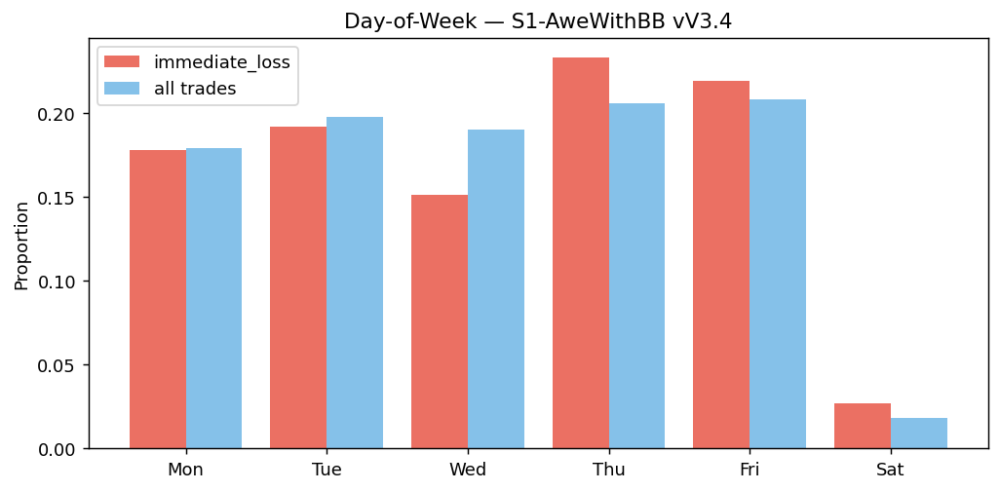
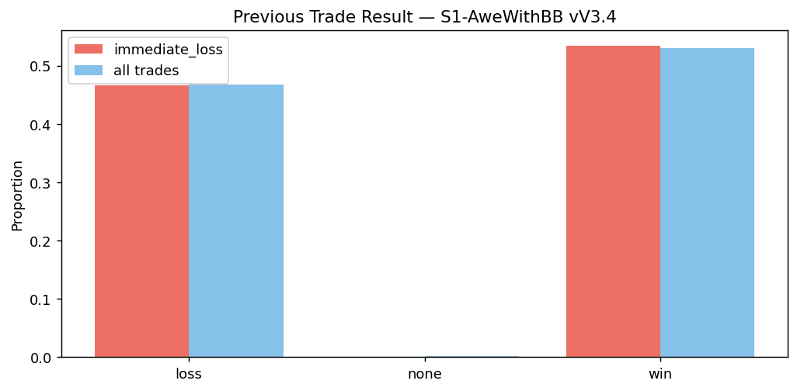
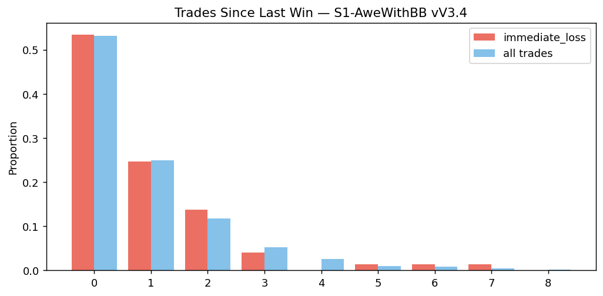
K-Bar Features at Entry
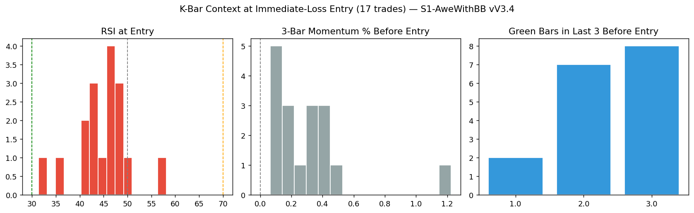
K-bar coverage: 17/73 immediate_loss trades (23.3%). Partial coverage — not a full-sample result.
Bollinger Band Position
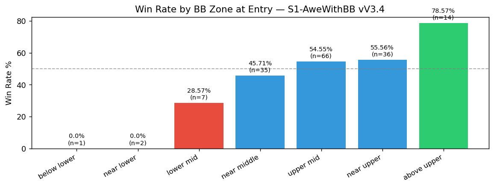
BB zone
| Context | n | WR | PF | Net USD |
|---|---|---|---|---|
| below_lower | 1 | 0.0% | 0.0 | -52.48 |
| near_lower | 2 | 0.0% | 0.0 | -104.58 |
| lower_mid | 7 | 28.57% | 0.403 | -145.29 |
| near_middle | 35 | 45.71% | 1.27 | 260.58 |
| upper_mid | 66 | 54.55% | 1.636 | 929.77 |
| near_upper | 36 | 55.56% | 1.642 | 500.43 |
| above_upper | 14 | 78.57% | 5.283 | 633.88 |
DXY Context
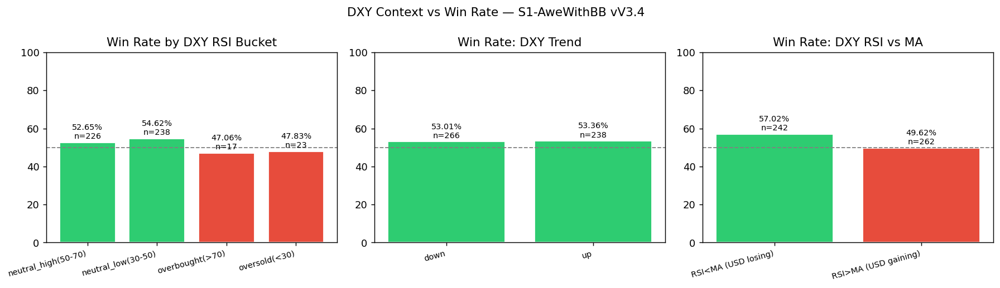
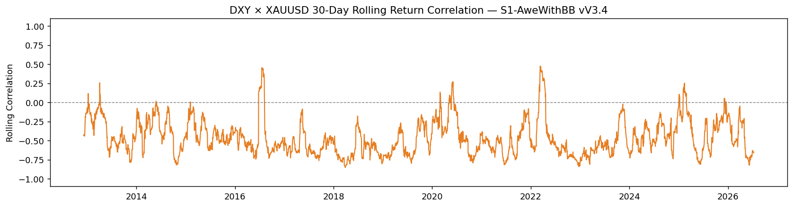
DXY RSI bucket
| Context | n | WR | PF | Net USD |
|---|---|---|---|---|
| neutral_high(50-70) | 226 | 52.65% | 1.471 | 2,476.80 |
| neutral_low(30-50) | 238 | 54.62% | 1.63 | 3,384.44 |
| overbought(>70) | 17 | 47.06% | 0.885 | -51.27 |
| oversold(<30) | 23 | 47.83% | 1.536 | 327.30 |
DXY 1D trend
| Context | n | WR | PF | Net USD |
|---|---|---|---|---|
| down | 266 | 53.01% | 1.583 | 3,624.16 |
| up | 238 | 53.36% | 1.458 | 2,513.11 |
Avg 30-day rolling DXY–XAUUSD correlation: -0.46
Multi-Timeframe Alignment
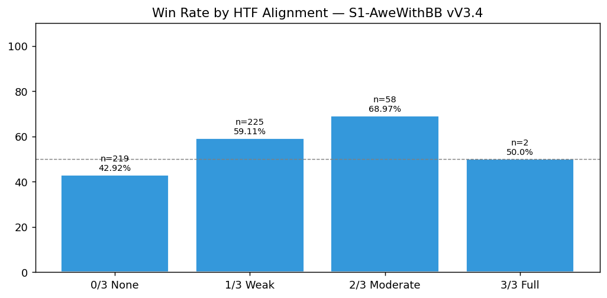
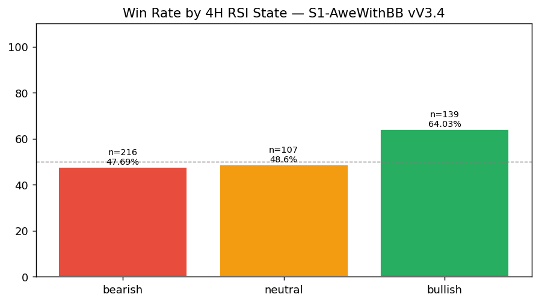
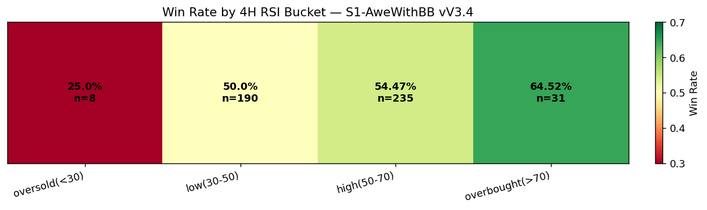
MTF HTF alignment
| Context | n | WR | PF | Net USD |
|---|---|---|---|---|
| 0/3 None | 219 | 42.92% | 0.92 | -498.48 |
| 1/3 Weak | 225 | 59.11% | 2.092 | 4,975.32 |
| 2/3 Moderate | 58 | 68.97% | 2.884 | 1,661.89 |
| 3/3 Full | 2 | 50.0% | 0.97 | -1.46 |
MTF 4H RSI state
| Context | n | WR | PF | Net USD |
|---|---|---|---|---|
| bearish | 216 | 47.69% | 1.263 | 1,481.73 |
| bullish | 139 | 64.03% | 2.285 | 3,165.55 |
| neutral | 107 | 48.6% | 1.306 | 827.48 |
Hold Time & Streaks
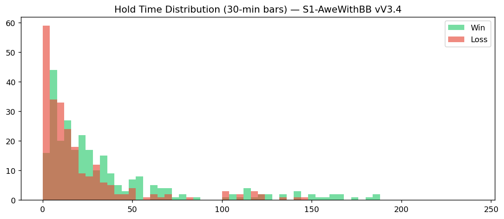
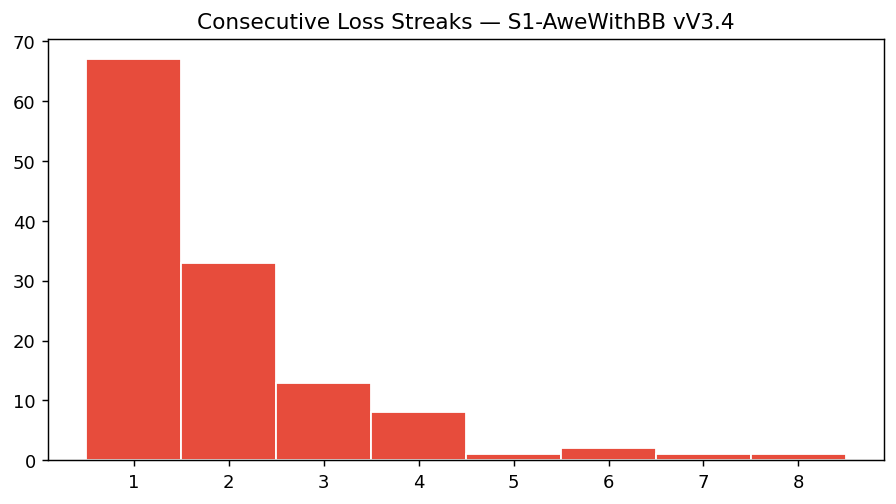
Method and evidence boundary
This is a full-coverage reproduction of the legacy V3.4 Fail Pattern Report at 30-minute granularity, not a new hypothesis test; it exists as the V3.4 half of the RS-XAUUSD-20260727-005 gap report and as historical context.
Raw CSV and private decision conversations remain in trading-private. This public page contains reviewed aggregate results, charts, and the reproducible method only.